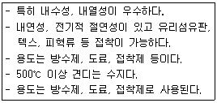
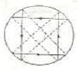
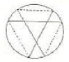
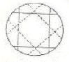
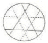
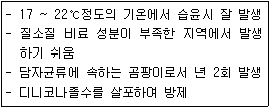
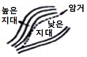
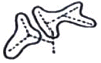
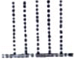
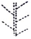

조경기능사 (2010-07-11 기출문제)
1과목: 조경일반
1. 관찰자 시선의 중심선을 기준으로 형태강이나 색채강에서 양쪽의 크기나 무게가 안정감을 줄 때 나타나는 아름다움은?
- 대비미
- 강조미
- 균형미
- 반복미
(정답률: 89%)

2. 1/100 축척의 설계 도면에서 1cm는 실제 공사현장에서는 얼마는 의미하는가?
- 1cm
- 1mm
- 1m
- 10m
(정답률: 87%)
3. 사적지 조경시 인가 뒤뜰에 식재하는 수종을 잘 어울리지 않는 것은?
- 버즘나무
- 감나무
- 앵두나무
- 대추나무
(정답률: 89%)
4. 다음 중 인간적 척도(human scale)와 밀접한 관계를 갖기가 가장 어려운 경관은?
- 관개경관
- 지형경관
- 세부경관
- 위요경관
(정답률: 55%)
5. 선의 분류 중 모양에 따른 분류가 아닌 것은?
- 실선
- 파선
- 1점 쇄선
- 치수선
(정답률: 75%)
6. 서양에서 정원이 건축의 일부로 종속되던 시대에서 벗어나 건축물을 정원양식의 일부로 다루려는 경향이 나타난 시대는?
- 중세
- 르네상스
- 고대
- 현대
(정답률: 79%)
7. 조경양식 발생요인 가운데 사회 환경 요인이 아닌 것은?
- 민족성
- 사상
- 종교
- 기후
(정답률: 80%)
8. 우리나라에서 최초의 유럽식 정원이 도입된 곳은?
- 덕수궁 석조전 앞 정원
- 파고다 공원
- 장충단 공원
- 구 중앙정부청사 주위 정원
(정답률: 88%)
9. 공원설계시 보행자 2인이 나란히 통행 가능한 최소 원로폭은?
- 4 ~ 5m
- 3 ~ 4m
- 1.5 ~ 2m
- 0.3 ~ 1.0m
(정답률: 88%)
10. 조경을 프로젝트의 대상지별로 구분할 때 문화재 주변 공간에 해당되지 않는 곳은?
- 궁궐
- 사찰
- 유원지
- 왕릉
(정답률: 90%)
11. 도시공원 및 녹지 등에 관한 법률 시행규칙에 의해 도시공원의 효용을 다하기 위하여 설치하는 공원시설 중 편익시설로 분류되는 것은?
- 야유회장
- 자연체험장
- 정금질
- 전망대
(정답률: 77%)
12. 각종 기구(T자, 삼각자, 스케일 등)를 사용하여 설계자의 의사를 선, 기호, 문장 등으로 용지에 표시하여 전달하는 것은?
- 모델링
- 게획
- 제도
- 제작
(정답률: 94%)
13. 이탈리아 르네상스 시대의 조경 작품이 아닌 것은?
- 빌라 토스카나(Villa Toscana)
- 빌라 란셀로티(Villa Lancelotti)
- 빌라 메디치(Villa de medici)
- 빌라 란테(Villa Lante)
(정답률: 60%)
14. 골프장의 각 코스를 설계할 때 어느 방향으로 길게 배치하는 것이 가장 이상적인가?
- 동서방향
- 남북방향
- 동남방향
- 북서방향
(정답률: 84%)
15. 영국의 스토우(Stowe)원을 설계했으며, 정원 내에 하하(Ha-ha)의 기교를 생각해 낸 조경기는?
- 브릿지앤
- 윌리엄 켄트
- 험프리 랩턴
- 에디슨
(정답률: 85%)
2과목: 조경재료
16. 다음 중 맹아력이 가장 약한 수종은?
- 가시나무
- 쥐똥나무
- 벚나무
- 사철나무
(정답률: 79%)
17. 외벽을 아름답게 나타내는데 사용하는 미장재료는?
- 타르
- 벽토
- 니스
- 래커
(정답률: 71%)
18. 분쇄옥인 우드칩(wood chip)을 얼칭재료로 사용할 때의 효과가 아닌 것은?
- 미관효과 우수
- 잡초억제기능
- 배수억제효과
- 토양개량효과
(정답률: 71%)
19. 잔디밭 조성시 뗏장심기와 비교한 종자파종 방법의 이점이 아닌 것은?
- 비용이 적게 든다.
- 작업이 비교적 쉽다.
- 균일하고 치밀한 잔디를 얻을 수 있다.
- 잔디밭 조성에 짧은 시일이 걸린다.
(정답률: 76%)
20. 시멘트가 경화하는 힘의 크기를 나타내며, 시멘트의 분말도, 화합물 조성 및 온도 등에 따라 결정되는 것은?
- 전성
- 소성
- 인성
- 강도
(정답률: 81%)
21. 봄에 씨부림하는 1년초에 해당하지 않는 것은?
- 매리골드
- 피튜니아
- 채송화
- 샐비어
(정답률: 51%)
22. 목재의 건조목적과 가장 관련이 없는 것은?
- 부패 방지
- 사용 후의 수축, 균열 방지
- 강도 증진
- 무늬 강조
(정답률: 86%)
23. 플라스틱 제품 제작시 첨가하는 재료가 아닌 것은?
- 가소제
- 안정제
- 충진제
- A.E제
(정답률: 77%)
24. 일반적인 금속재료의 장점이라고 볼 수 없는 것은?
- 여러 가지 하중에 대한 강도가 크다.
- 재질이 균일하고 불연재이다.
- 각기 고유의 광택이 있다.
- 가열에 강하고 질감이 따뜻하다.
(정답률: 85%)
25. 다음 중 음수이며 또한 천근성인 수종에 해당되는 것은?
- 전나무
- 모과나무
- 자작나무
- 독일가문비나무
(정답률: 62%)
26. 우리나라에서 사용되고 있는 점토벽돌은 기존형과 표준형으로 분류되는데 그 중 기존형 벽돌의 규격은?
- 20cm x 9cm x 5cm
- 21cm x 10cm x 6cm
- 22cm x 12cm x 6.5cm
- 19cm x 9cm x 5.7cm
(정답률: 67%)
27. 다음 보기가 설명하는 합성수지의 종류는?

- 실리콘수지
- 멜라민수지
- 푸란수지
- 폴리에틸렌수지
(정답률: 81%)
28. 다음 중 석가산을 만들고자 할 때 적합한 돌은?
- 잡석
- 괴석
- 호박돌
- 자갈
(정답률: 85%)
29. 주목(Taxus cuspidafa S. et Z)에 관한 설명으로 부적합한 것은?
- 9월경 붉은 색의 열매가 열린다.
- 큰 줄기가 적갈색으로 관상가치가 높다.
- 맹아력이 강하며, 음수이나 양지에서 생육이 가능하다.
- 생장속도가 매우 빠르다.
(정답률: 78%)
30. 목재의 옹이와 관련된 설명 중 틀린 것은?
- 옹이는 목재강도를 감소시키는 가장 흔한 결점이다.
- 죽은 옹이는 산 옹이 보다 일반적으로 기계적 성질에 미치는 영향은 적다.
- 옹이가 있으면 인장강도는 증가한다.
- 같은 크기의 옹이가 한 곳에 많이 모인 집중옹이가 고루 분포된 경우보다 강도감소에 끼치는 영향은 더욱 크다.
(정답률: 75%)
31. 다음 중 일반적으로 봄에 가장 먼저 황색 계통의 꽃이 피는 수종은?
- 등나무
- 산수유
- 박태기나무
- 벚나무
(정답률: 81%)
32. 디딤돌로 사용하는 돌 중에서 보행 중 군데군데 잠시 멈추어 설 수 있도록 설치하는 돌의 크지(지름)로 가장 적당한 것은? (단, 성인을 기준으로 한다.)
- 10 ~ 15cm
- 20 ~ 25cm
- 30 ~ 35cm
- 50 ~ 55cm
(정답률: 68%)
33. 토양 개량제로 활용되지 못하는 것은?
- 홀맥스콘
- 피트모스
- 부엽토
- 펄라이트
(정답률: 63%)
34. 다음 중 일반적으로 살아있는 가지를 자를 경우 수종별 상처부위의 부후 위험성이 가장 적은 수중은?
- 왕벚나무
- 소나무
- 목련
- 느릅나무
(정답률: 63%)
35. 조경용으로 벽돌, 도관, 타일, 기와 등을 만드는 재료로 가장 적당한 것은?
- 금속
- 플라스틱
- 점토
- 시멘트
(정답률: 87%)
3과목: 조경 시공 및 관리
36. 굳지 않은 콘크리트의 성질을 표시하는 용어 중 거푸집등의 형상에 순응하여 채우기 쉽고, 분리가 일어나지 않는 성질을 가리키는 것은?
- 워커빌리티(workability)
- 컨시스턴시(consistency)
- 플라스티서티(planticity)
- 펌퍼빌리티(pumpability)
(정답률: 47%)
37. 시공관리의 주요 계획목표라고 볼 수 없는 것은?
- 우수한 품질
- 공사기간의 단축
- 우수한 시각미
- 경제적 시공
(정답률: 66%)
38. 추위에 의하여 나무의 줄기 또는 수피가 수선 방향으로 갈라지는 현상을 무엇이라 하는가?
- 고사
- 피소
- 상렬
- 괴사
(정답률: 83%)
39. 토공사에서 흐트러진 상태의 토양변환율이 1.1 일 때 터파기량이 10m3, 되메우기량이 7m3 이라면 잔토처리량은?
- 3 m3
- 3.3 m3
- 7 m3
- 17 m3
(정답률: 83%)
40. 조경공사에서 수목 및 잔디의 할증률은 몇 % 인가?
- 1%
- 5%
- 10%
- 20%
(정답률: 83%)
41. 연못의 급배수에 대한 설명으로 부적합한 것은?
- 배수공은 연못 바닥의 가장 깊은 곳에 설치한다.
- 항상 일정한 수위를 유지하기 위한 시설을 토수구라 한다.
- 순환 펌프 시설이나 정수 시설을 설치시 차폐식재를 하여 가려 준다.
- 급배수에 필요한 파이프의 굵기는 강우량과 급수량을 고려해야 한다.
(정답률: 68%)
42. 새기줄로 뿌리분을 감는 방법 중 석줄 두번걸기를 표현한 것은?




(정답률: 71%)
43. 다음 설명과 관련이 있는 잔디의 병은?

- 흰가루병
- 그을음병
- 잎마름병
- 녹병
(정답률: 71%)
44. 조경수목 중 탄수화물의 생성이 풍부할 때 꽃이 잘 필 수 있는 조건에 맞는 탄소와 질소의 관계로 가장 적당한 것은?
- N ＞ C
- N = C
- N < C
- N ≥ C
(정답률: 61%)
45. 좁은 정원에 식재된 나무가 필요 이상으로 커지지 않게 하기 위하여 녹음수를 전정하는 것은?
- 생장을 돕기 위한 전정
- 생장을 억제하는 전장
- 생리 조정을 위한 전정
- 갱신을 위한 전정
(정답률: 90%)
46. 낙엽수의 휴면기 겨울 전정(12~3월)의 장점으로 틀린 것은?
- 병충해의 피해를 입은 가지의 발견이 쉽다.
- 가지의 배치나 수형이 잘 드러나므로 전정하기가 쉽다.
- 굵은 가지를 잘라 내어도 전정의 영향을 거의 받지 않는다.
- 막눈 발생을 유도하며 새가지가 나오기 전까지 수종 고유의 아름다운 수형을 감상할 수 있다.
(정답률: 59%)
47. 잔디 1매(30×30cm)에 1본의 꼬치가 필요하다. 경사 면적이 45m2 인 곳에 잔디를 전면붙이기로 식재하려 한다면 이 경사지에 필요한 꼬치는 약 몇 개 인가? (단, 가장 근사값을 정한다.)
- 46본
- 333본
- 450본
- 495본
(정답률: 66%)
48. 덩굴식물이 시설물을 타고 올라가 정원적인 미를 살릴 수 있는 시설물이 아닌 것은?
- 파골라
- 테라스
- 아치
- 트렐리스
(정답률: 73%)
49. 다음 중 제초제가 아닌 것은?
- 페니트로티온수화제
- 시아진수화제
- 알라클로르유제
- 패러쾃디클로라이드액제
(정답률: 48%)
50. 병 · 해충의 화학적 방제 내용으로 틀린 것은?
- 병 · 해충을 일찍 발견해야 방제효과가 크다.
- 될 수 있으면 발생 후에 약을 뿌려준다.
- 병 · 해충이 발생하는 과정이나 습성을 미리 알아두어야 한다.
- 약해에 주의해야 한다.
(정답률: 91%)
51. 디딤놀 놓기의 방법 설명으로 틀린 것은?
- 디딤돌의 간격은 보폭을 고려하여야 한다.
- 디딤놀 놓기는 직선 위주로 놓는다.
- 디딤돌이 시작하는 곳, 끝나는 곳, 갈라지는 곳에는 다른 것에 비해 큰 디딤돌을 놓는다.
- 디딤돌의 긴지름은 보행자 진행 방향과 수직을 이루어야 한다.
(정답률: 79%)
52. 야외용 의자 제작시 2인용을 기준으로 할 때 얼마 정도의 길이가 필요한가? (단, 여유공간을 포함한다.)
- 60cm 정도
- 120cm 정도
- 180cm 정도
- 200cm 정도
(정답률: 81%)
53. 다음 중 정구장과 같이 좁고 긴 형태의 전 지역을 균일하게 배수하려는 암거 방법은?




(정답률: 71%)
54. 돌가루와 아스팔트를 섞어 가열한 것을 식기 전에 다져 놓은 자갈층 위에 고르게 깔아 롤러로 다져 끝맺음한 포장 방법은?
- 소형고압블럭포장
- 콘크리트포장
- 아스팔트포장
- 마사토포장
(정답률: 81%)
55. 소나무 흑병의 환부가 4 ~ 5월경에 터져서 흩어져 나오는 포자는?
- 녹포자
- 녹병포자
- 여름포자
- 겨울포자
(정답률: 47%)
56. 일반적으로 표면 배수시 빗물받이는 몇 m 마다 1개씩 설치하는 것이 효과적인가?
- 1 ~ 10 m
- 20 ~ 30 m
- 40 ~ 50 m
- 60 ~ 70 m
(정답률: 83%)
57. 조경수목 중 낙엽수류의 일반적인 뿌리돌림 시기로 가장 알맞은 것은?
- 3월 중순 ~ 4월 상순
- 5월 상순 ~ 7월 상순
- 7월 하순 ~ 5월 하순
- 8월 상순 ~ 9월 상순
(정답률: 67%)
58. 화단을 조성하는 장소의 환경 조건과 구성하는 재료 등에 따라 구분 할 때 '경재화단'에 대한 설명으로 바른 것은?
- 화단의 어느 방향에서나 관상 가능하도록 중앙 부위는 높게, 가장 자리는 낮게 조성한다.
- 양쪽 방향에서 관상할 수 있으며 키가 작고 잎이나 꽃이 화려하고 아름다운 것을 심어준다.
- 전면에서만 감상되기 때문에 화단 앞쪽은 키가 작은 것을, 뒤쪽으로 갈수록 큰 초화류를 심는다.
- 가장 규모가 크고 아름다운 화단으로 광장이나 잔디밭등에 조성되며 화려하고 복잡한 문양 등으로 펼쳐진다.
(정답률: 64%)
59. 세포분열을 촉진하여 식물체의 각 기관들의 수를 증가, 특히 꽃가 열매를 많이 달리게 하고, 뿌리의 발육, 녹말 생산, 엽록소의 기능을 높이는데 관여하는 영양소는?
- N
- P
- K
- Ca
(정답률: 55%)
60. 웅애안을 죽이는 농약의 종류에 해당하는 것은?
- 살충제
- 살균제
- 살비제
- 살서제
(정답률: 85%)